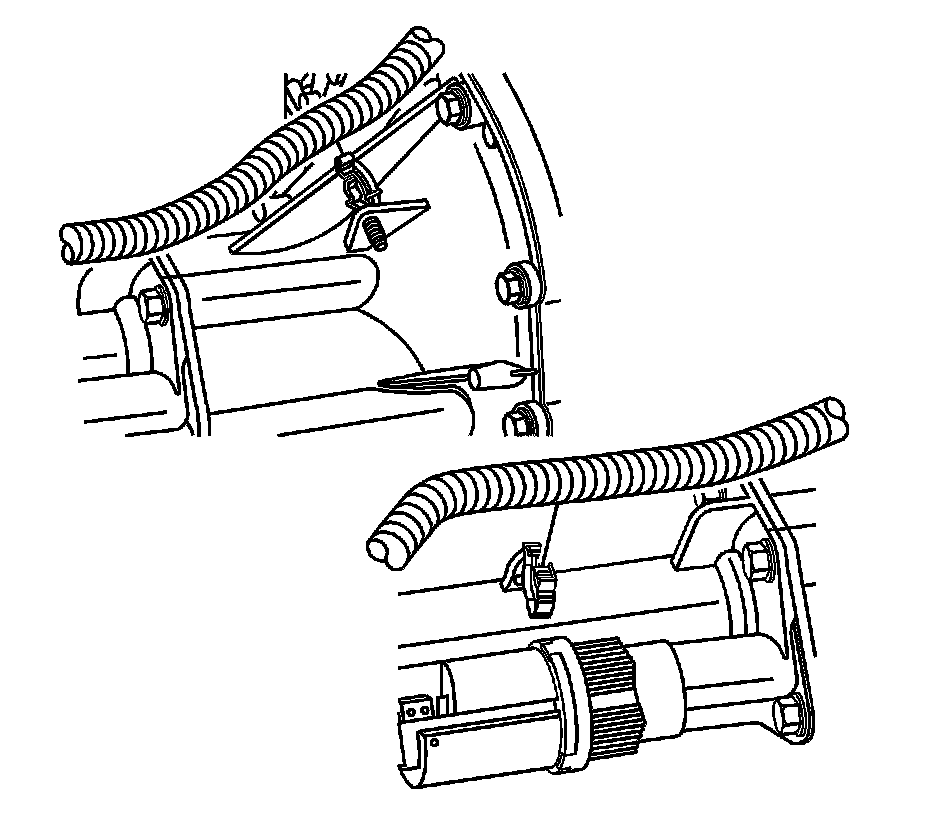

Differential Carrier Assembly Replacement (1500 4WD)
Differential Carrier Assembly Replacement (1500 4WD)
Removal Procedure
1. Raise and support the vehicle. Refer to Lifting and Jacking the Vehicle.
2. Remove the lower control arm crossmember.
Important: If removing the differential carrier assembly to service other components, it is not necessary to drain the differential carrier.
3. Drain the differential carrier. Refer to Front Axle Lubricant Replacement.

4. Remove the wiring harness from the differential carrier, if needed.

5. Remove the electrical connector from the actuator motor.
6. Remove the differential carrier vent hose.

7. Remove the wheel drive shaft mounting bolts.
8. Remove the front propeller shaft.
9. Support the differential carrier with a transmission jack.
10. Remove the right differential carrier mounting nuts and washers.
11. Remove the left differential carrier mounting bolts.
12. With the aid of an assistant, pivot the differential carrier forward and down to remove the it from the vehicle.
13. Remove the differential carrier assembly from the vehicle.
Installation Procedure
1. With the aid of an assistant, maneuver the differential carrier so that the wheel drive shafts can be installed.
2. Install the differential carrier assembly.
Notice: Refer to Fastener Notice.
3. Install the right mounting nuts and washers.
Tighten the mounting nuts to 100 Nm (75 lb ft).
4. Install the left mounting bolts for the differential carrier.
Tighten the mounting nuts to 100 Nm (75 lb ft).
5. Remove the transmission jack stand.
6. Install the wiring harness on the differential carrier, if needed.
7. Install the electrical connector to the actuator motor, if needed.
8. Install the differential carrier vent hose.
9. Install the propeller shaft.
10. Install the wheel drive shaft mounting bolts.
Tighten the mounting bolts to 79 Nm (58 lb ft).
11. Install the lower control arm crossmember.
12. Fill the differential carrier. Refer to Front Axle Lubricant Replacement.
13. Remove the support and lower the vehicle.